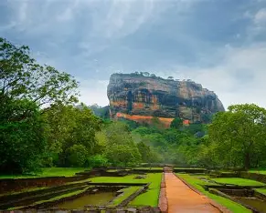
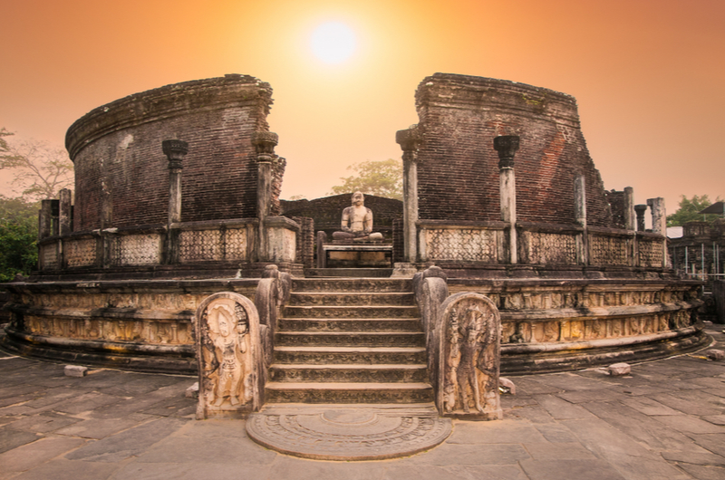
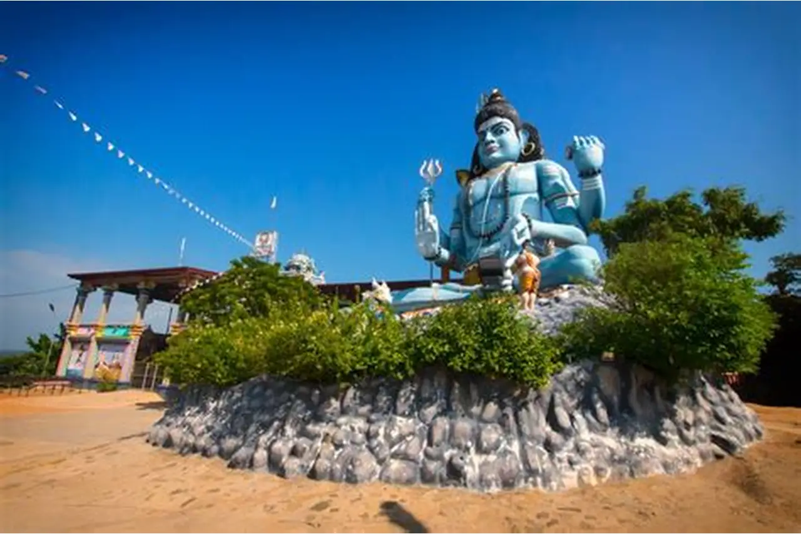
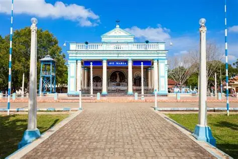
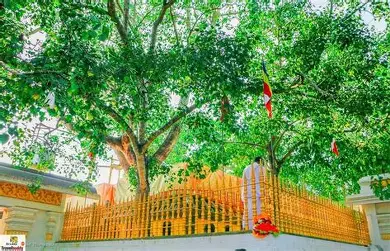
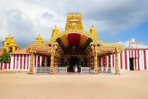

Galle Fort
Built by the Portuguese in 1588 and extensively fortified by the Dutch, this living heritage site is a mosaic of colonial architecture and coastal beauty.
Built by the Portuguese in 1588 and extensively fortified by the Dutch, this living heritage site is a mosaic of colonial architecture and coastal beauty.

The "Lion Rock" was the fortress palace of King Kasyapa. It is world-renowned for its ancient frescoes, mirror wall, and advanced hydraulic gardens.

Located in the royal palace complex of the former Kingdom of Kandy, this temple houses the relic of the tooth of the Buddha.

A unique circular relic house in the ancient city of Polonnaruwa, showcasing the pinnacle of ancient Sinhalese architectural engineering.

A sacred mountain in Sri Lanka, revered across religions for the holy footprint at its summit.

A historic Hindu temple in Trincomalee. Photography is generally restricted inside, and formal attire is required for entry.

A highly revered Catholic pilgrimage site in Mannar, known for its spiritual significance and historical architecture.

A sacred fig tree in Anuradhapura, grown from a sapling of the original Bodhi tree under which Lord Buddha attained enlightenment.

A significant Hindu temple in Jaffna, dedicated to Lord Shiva and famous for its vibrant festivals and architecture.